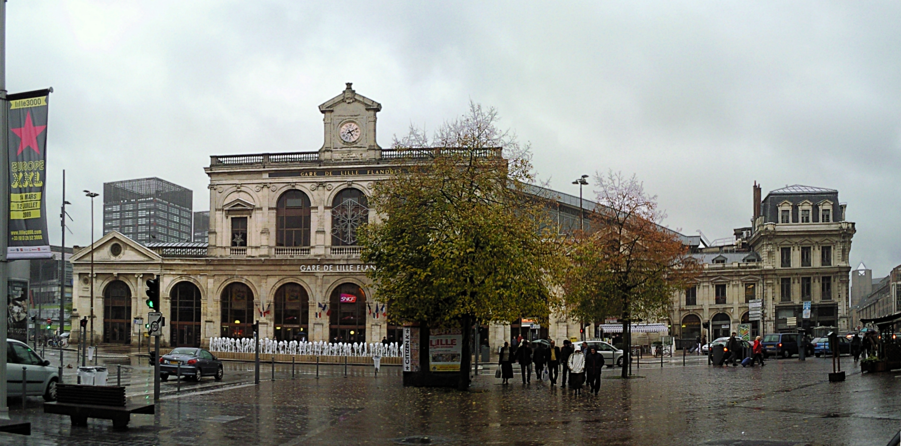

CityLoop Quest Lille


Lille se visite très bien à pied, surtout dans son centre historique. Les distances entre la Grand-Place, le Vieux-Lille, l’Opéra, la Vieille Bourse, le Palais Rihour, la cathédrale et plusieurs musées sont raisonnables. La marche permet de profiter des façades, des vitrines, des détails de brique et des changements d’ambiance. C’est aussi le meilleur moyen d’éviter de réduire Lille à une succession de monuments isolés.
Les gares Lille-Flandres et Lille-Europe donnent à la ville une accessibilité exceptionnelle. Elles sont proches du centre et reliées aux grands axes régionaux, nationaux et européens. Pour un visiteur, cela signifie qu’il est possible d’arriver en train et de commencer presque immédiatement le parcours. Autour des gares, le contraste entre architecture ancienne, flux contemporains et quartier d’affaires est particulièrement lisible.
Le métro automatique, le tramway et les bus du réseau métropolitain complètent efficacement la marche. Ils sont utiles pour rejoindre Roubaix, Tourcoing, Villeneuve-d’Ascq, La Piscine, le LaM ou certains quartiers plus éloignés. Le visiteur qui reste dans l’hypercentre n’en aura pas toujours besoin, mais celui qui utilise les POI Explorer gagnera beaucoup de temps grâce aux transports en commun.
Le vélo peut être agréable, mais il demande de l’attention : rues pavées, circulation, zones piétonnes, stationnement et météo peuvent modifier l’expérience. Pour une visite culturelle, privilégiez les trajets simples, les pistes visibles et les liaisons vers les parcs ou les quartiers moins denses. Lille n’est pas immense, mais elle est suffisamment active pour demander de rester attentif aux flux.
Avec CLQ, choisissez le mode de déplacement selon votre énergie. Le petit parcours se fait confortablement à pied ; le moyen demande de bonnes chaussures ; le grand gagne à être ponctué de pauses. Gardez en tête que la pluie et le vent font partie du charme local, mais peuvent ralentir la marche. Une visite réussie de Lille est souvent une visite souple, capable d’alterner marche, transport public et pause au chaud.
La meilleure stratégie consiste souvent à combiner marche et transports publics sans vouloir tout faire d’un seul trait. Gardez le cœur historique pour la promenade lente, utilisez métro ou tram pour rejoindre les secteurs plus éloignés, et prévoyez des pauses aux points de transition comme les gares ou République. Cette souplesse rend la visite plus agréable, surtout lorsque la météo change rapidement, ce qui arrive volontiers dans le Nord. Il faut aussi tenir compte du sol lillois : certaines rues pavées sont magnifiques mais fatigantes, certains trottoirs étroits demandent de l’attention, et les grands axes autour des gares changent vite d’ambiance. Pour une visite fluide, choisissez un point de départ clair, évitez de multiplier les traversées inutiles et gardez les musées ou les cafés comme refuges possibles en cas de météo difficile. Les gares sont très pratiques pour arriver, mais elles ne doivent pas absorber toute la visite : le cœur de Lille se découvre mieux en ralentissant dès que l’on rejoint les rues piétonnes et les places anciennes. Le métro et le tram deviennent alors des alliés pour élargir le territoire sans transformer la promenade en marathon. Cette alternance entre marche et transport donne une vraie liberté, surtout si vous voyagez avec des enfants ou un temps limité. Pensez enfin aux horaires : certains lieux ferment plus tôt qu’on ne l’imagine, les marchés ont leur propre rythme et les transports peuvent être plus chargés aux heures de pointe. Une bonne organisation consiste à placer les visites intérieures au moment où la ville est la plus fatigante dehors, puis à revenir aux rues anciennes lorsque la lumière redevient agréable. En gardant cette marge, vous évitez de transformer la visite en contrainte. La ville se prête à l’improvisation : un détour par une façade, une entrée dans une cour, une pause en terrasse ou un changement de ligne peuvent enrichir le parcours.